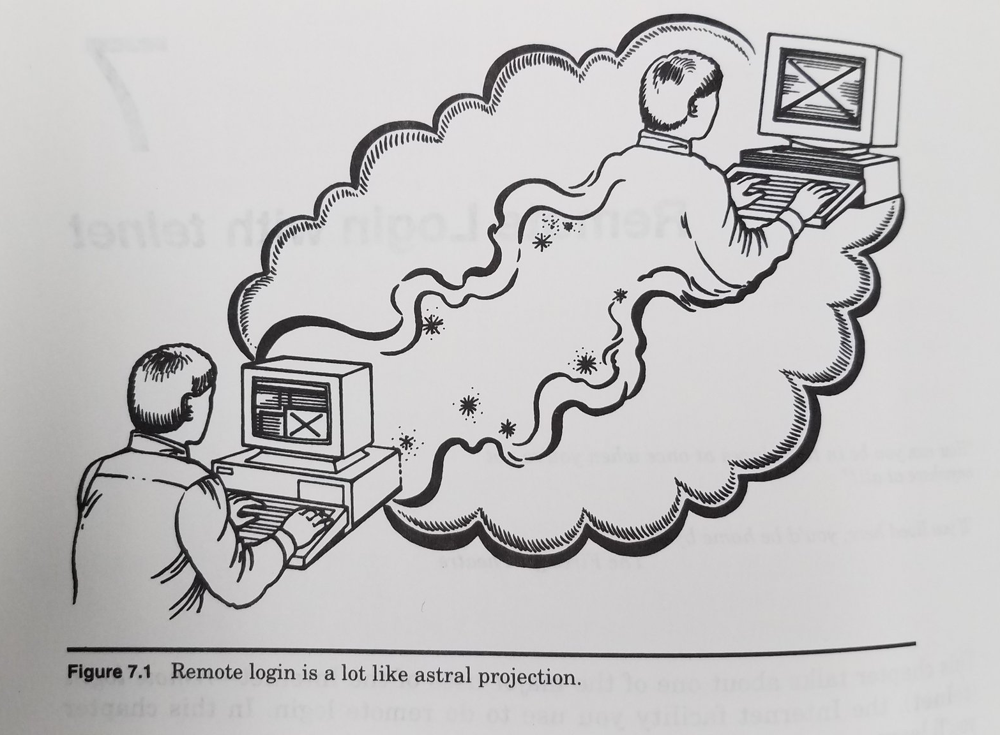
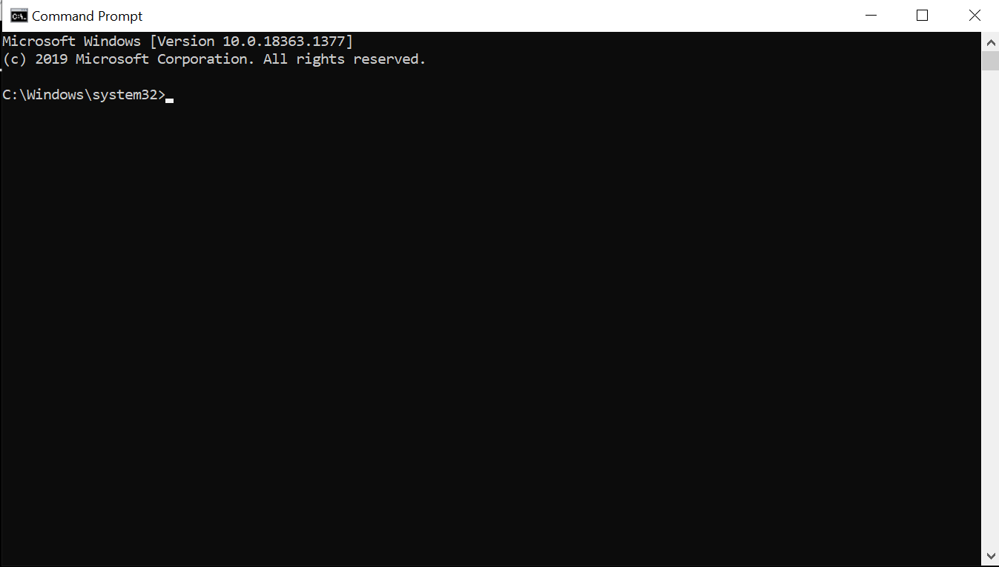
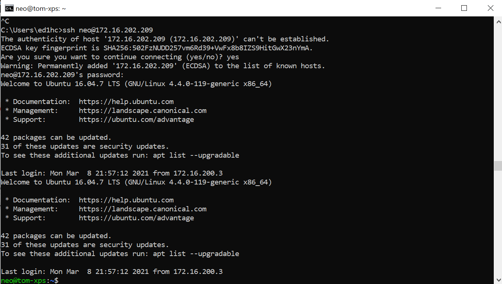

Chapter 8 ssh and the command line

Before this class please install the University VPN and confirm it works [estimated time: 5-10 minutes]
In this class we will introduce the idea of the command line, running commands without the normal graphical user interface (GUI) and accessing remote computers using ssh (secure shell).
8.1 Launching the Terminal
On Windows or Mac, search ‘Terminal’ in the launcher. You should see a small black box (called “Command Prompt” on Windows) with a cursor.

Note that the cursor appears after some information that shows a file path and/or computer identity. Just as RStudio has a working directory, a location where it looks to load or save files, so with the command line. This is very important, since many command line instructions will only work if they are run in the right place.
8.3 Networking
Computers connected to a network have an address, called an IP address, which is always four numbers separated by dots. You are used to navigating the internet using domain names such as sheffield.ac.uk, but these names exist for human convenience. Like the command line for individual computers, IP addresses are closer to the metal of how computer networks actually work.
Copy this IP into your browser and see which website it takes you to: 143.167.2.102.
You computer is also connected to the internet, so it has an IP address. You can find this out by typing ipconfig (Windows) or ifconfig (Mac) at the command line. (You can also google ‘what is my ip’ but that won’t work for what we’re about to do). This command should give you a bunch of information. Look for the IP addresses. If you are at home you may see one with the first two numbers 192.168.xxx.xxx. If you are on campus you should see an IP of the form `172.xxx.xxx.xxx’. All computer on the University network have IPs which start with the same number.
Now launch the University VPN and look for your IP again. If you are off campus it should change, so you now have an IP which starts 172. Remember this number, we will use it later.
8.4 Ping
Computers talk to each other in lots of different ways, but you are probably mostly familiar with webpages - the “world wide web” (www) served via the http protocol.
One of the very simplest ways for two computers to talk to each other is ping which is just a tool to check whether two computers can pass messages back and forth. The content of the message isn’t important, it is just to check that they are both connected to the network
You can ping an IP or a website. Try it at the command line
ping shef.ac.uk
You should get back a bunch of lines will tell you how long, in milliseconds, your computer took to get a message to and from that website. Try it with somewhere further away.
ping wapo.com (the East coast of the USA), or ping globaltimes.cn (mainland China)
But we can also ping individual machines. “sharc” is one of the high performance computing (HPC) clusters at Sheffield. You can only talk to it if you are inside the University network (i.e. you need to be on campus or turn your VPN on). Try
ping sharc.shef.ac.uk
If you’ve turned your VPN on correctly it will work.
8.5 Remote access using SSH
If two computers are connected, you may be able to remotely access one from the other using a command called ssh. This takes the form
ssh user@machine_ip
Tom will set up a machine for you to try this in class. If successful you should see something like this

The terminal will look similar, but commands you run will now execute on this remote machine. You may also have changed operating system, so you rather than the commands for Mac or Windows, you need to use the commands the work on the remote machine. Many HPC machines and webservers are linux machines (and so is the one we will connect to in class).
8.6 Find files, run files, copy files
This section assumes you are working on a remote linux machine
Let’s use the command find to look on this remote computer for any R scripts. The use of * here is known as “a wildcard”
find -name '*.R'
We can run R on the remote computer, but you can’t run RStudio (because the terminal doesn’t show graphics, only text). Running software without the GUI is known as running software “headless”.
R
Will launch an interactive R console. Quit with q()
But we can also run the script without launching R (so the will run the script and then quit, leaving us back at the terminal. You can either navigate to the containing folder and run it.
Rscript toyscript.R
You can also feed the script to R by specifying the full path
Rscript home/neo/Desktop/toyscript.R
Find out how long the script takes to run by putting time in front
time Rscript toyscript.R
Now there’s no point running a simple R script remotely, but when you have very large data it can be convenient to run your analysis on a remote machine which is more powerful (or on many remote machines, which allows parallel processing).
Let’s copy this script from the remote machine to our home machine. To do this you need the scp command and to know your username and ip address. The path to where you want the file saved comes after the colon:
scp toyscript.R user@your_ip:/path/to/Desktop/toyscript.R
8.6.1 switches
Often we feed additional options (sometimes called ‘switches’) to command line tools. So the command espeak speaks words aloud
espeak "hello"
We can read the espeak documentation to see what the options are. Let’s adjust the pitch and speed.
espeak -p 8 "hello but with extra gravitas"
espeak -s 230 "hello my name is speedy"
8.7 Exercises
These exercises will need to be done in the week after class, since the remote machine is not turned on permamently. See slack for the IP, username and password to use for remote access
- Enter the remote IP in a browser - this shows a website served from the remote computer
- remote access it using ssh
- find the file index.html
- hint: it is in /var
- copy to your local machine using scp
- edit using a text editor and save on your local machine
- copy back to 138.68.142.125
- look again at the IP in a browser to verify that you changed it (remember to press refresh/F5/clear your cache)
8.8 Checklist
- Identify and launch a terminal window
- Navigate the directory tree using command line instructions
- find your ip address
- ping an ip or website
- find files, run programmes, on remote machines
- feed options to command line tools using switches
- copy files to/from remote machines using scp
8.9 Resources
- Five reasons why researchers should learn to love the command line
- University of Sheffield VPN
- For historical interest: In the Beginning… Was the Command Line (1999) Neal Stephenson
- If you want to experiment with linux you may start with Ubuntu Linux